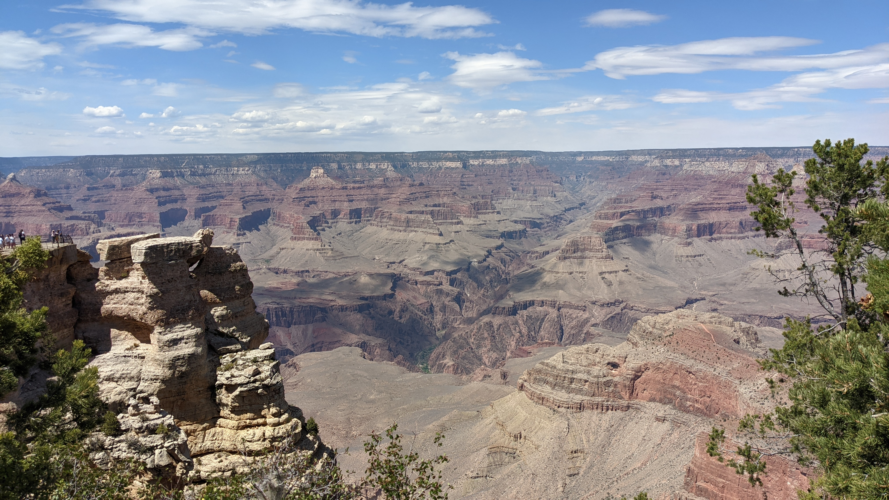
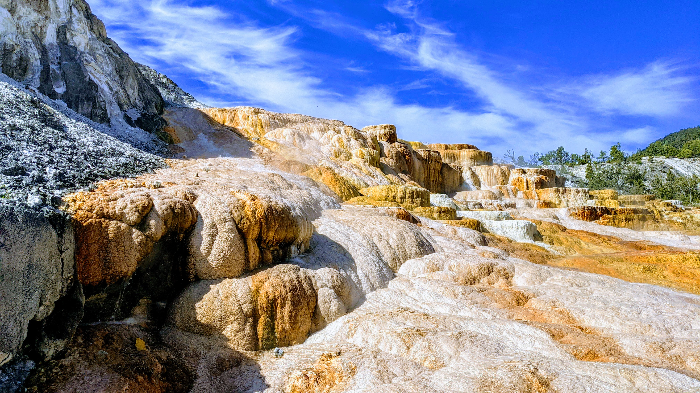

Out West
This was the first trip my family and I took upon getting my new phone, just after COVID lockdowns began to ease and things like flight became more accessible. We wanted to go somewhere we'd know there would be lots of fresh air and few people, so what better than some national parks? In this trip we went to the Grand Canyon, Zion, and Bryce Canyon National Parks. Truly sights to see, each in their own right.

The view from Rainbow Point, one of the most scenic vistas in Bryce Canyon

Staring up at a cliff face in Zion Canyon
View overlooking the Grand Canyon as far as the eye can see. Thankfully the weather was beautiful and sunny!
Yellowstone
For the longest time, my parents had talked about how seeing Yellowstone National Park was a bucket list item for life. For me, it was yet another opportunity to explore the amazing geographic diversity contained within America. Even though we went just two weeks after our previous trip out West, Yellowstone blew my mind. I was in awe the whole time that we were walking through a national park in the mouth of a volcano - and of course, all the beautiful formations that it created

Looking down on the Grand Prismatic Spring after a half hour of climbing up to a lookout point
Watching the shadow of a cloud pass over a mountain near the Gardiner (MT) entrance of Yellowstone
My first glimpse into the effects of the volcano under Yellowstone - the ever-bubbling Mammoth Hot Spring

Admiring Yellowstone Falls from a faraway lookout point
San Francisco
Sensing a theme? Having grown up in Michigan, I've always been deeply fascinated by the Western part of America. However, my 2022 spring break was quite different from any previous vacation. I traveled alone and explored the city with my cousins who live there. National parks are very nice, but I also appreciate a beautiful big city with sights, sounds, and tastes everywhere. Tons of good food and tons of great views combined to make this one of my favorite vacations.
A picture of one of the Golden Gate Bridge towers, taken while I was riding my bicycle across the bridge

Coit Tower - one of the best lookout points of the entire city - here, the Financial District (FiDi) is pictured.
Looking out over the Pacific Ocean near the Sutro Baths, seen slightly in the lower right corner of the picture